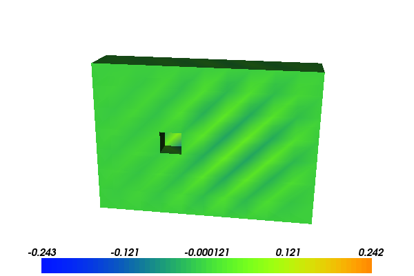

6. A simple eigenvalue solver¶
We recommend that you are familiar with the demo for the Poisson equation before looking at this demo.
This demo illustrates how to:
- Load a mesh from a file
- Solve an eigenvalue problem
- Use a specific linear algebra backend (PETSc)
- Initialize a finite element function with a coefficient vector
6.1. Problem definition¶
Sometimes one wants to solve an eigenvalue problem such as this one: find the eigenvalues \(\lambda \in \mathbb{R}\) and the corresponding eigenvectors \(x \in \mathbb{R}^n\) such that
In the finite element world, the matrix \(A\) often originates from some partial differential operator. For instance, \(A\) can be the stiffness matrix corresponding to this bilinear form:
Here, we will let the space \(V\) (of dimension \(n\)) consist of continuous piecewise linear polynomials defined relative to some mesh (Lagrange finite elements). For this example, we will consider a 3-D mesh of tetrahedra generated elsewhere.
With the above input the first eigenfunction will look as follows:
{kind=link}
In the following, we show how this eigenvalue problem can be solved.
If you want a more complex problem, we suggest that you look at the other eigenvalue demo.
6.2. Implementation¶
This demo is implemented in a single Python file,
demo_eigenvalue.py, which contains both the variational
forms and the solver.
The eigensolver functionality in DOLFIN relies on the library SLEPc which in turn relies on the linear algebra library PETSc. Therefore, both PETSc and SLEPc are required for this demo. We can test whether PETSc and SLEPc are available, and exit if not, as follows:
from dolfin import *
# Test for PETSc and SLEPc
if not has_linear_algebra_backend("PETSc"):
print("DOLFIN has not been configured with PETSc. Exiting.")
exit()
if not has_slepc():
print("DOLFIN has not been configured with SLEPc. Exiting.")
exit()
First, we need to construct the matrix \(A\). This will be done in three steps: defining the mesh and the function space associated with it; constructing the variational form defining the matrix; and then assembling this form. The code is shown below:
# Define mesh, function space
mesh = Mesh("../box_with_dent.xml.gz")
V = FunctionSpace(mesh, "Lagrange", 1)
# Define basis and bilinear form
u = TrialFunction(V)
v = TestFunction(V)
a = dot(grad(u), grad(v))*dx
# Assemble stiffness form
A = PETScMatrix()
assemble(a, tensor=A)
Note that we (in this example) first define the matrix A as a
PETScMatrix and then assemble the
form into it. This is an easy way to ensure that the matrix has the
right type.
In order to solve the eigenproblem, we need to define an
eigensolver. To solve a standard eigenvalue problem, the eigensolver
is initialized with a single argument, namely the matrix A.
# Create eigensolver
eigensolver = SLEPcEigenSolver(A)
Now, we ready solve the eigenproblem by calling the solve method of the eigensolver. Note
that eigenvalue problems tend to be computationally intensive and may
hence take a while.
# Compute all eigenvalues of A x = \lambda x
print("Computing eigenvalues. This can take a minute.")
eigensolver.solve()
The result is kept by the eigensolver, but can fortunately be
extracted. Here, we have computed all eigenvalues, and they will be
sorted by largest magnitude. We can extract the real and complex part
(r and c) of the largest eigenvalue and the real and complex
part of the corresponding eigenvector (ru and cu) by asking
for the first eigenpair as follows:
# Extract largest (first) eigenpair
r, c, rx, cx = eigensolver.get_eigenpair(0)
Finally, we want to examine the results. The eigenvalue can easily be
printed. But, the real part of eigenvector is probably most easily
visualized by constructing the corresponding eigenfunction. This can
be done by creating a Function in the function space V
and the associating eigenvector rx with the Function. Then the
eigenfunction can be manipulated as any other Function, and in particular plotted:
print("Largest eigenvalue: ", r)
# Initialize function and assign eigenvector
u = Function(V)
u.vector()[:] = rx
# Plot eigenfunction
plot(u)
interactive()
6.3. Complete code¶
from __future__ import print_function
from dolfin import *
# Test for PETSc and SLEPc
if not has_linear_algebra_backend("PETSc"):
print("DOLFIN has not been configured with PETSc. Exiting.")
exit()
if not has_slepc():
print("DOLFIN has not been configured with SLEPc. Exiting.")
exit()
# Define mesh, function space
mesh = Mesh("../box_with_dent.xml.gz")
V = FunctionSpace(mesh, "Lagrange", 1)
# Define basis and bilinear form
u = TrialFunction(V)
v = TestFunction(V)
a = dot(grad(u), grad(v))*dx
# Assemble stiffness form
A = PETScMatrix()
assemble(a, tensor=A)
# Create eigensolver
eigensolver = SLEPcEigenSolver(A)
# Compute all eigenvalues of A x = \lambda x
print("Computing eigenvalues. This can take a minute.")
eigensolver.solve()
# Extract largest (first) eigenpair
r, c, rx, cx = eigensolver.get_eigenpair(0)
print("Largest eigenvalue: ", r)
# Initialize function and assign eigenvector
u = Function(V)
u.vector()[:] = rx
# Plot eigenfunction
plot(u)
interactive()